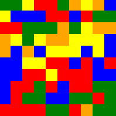
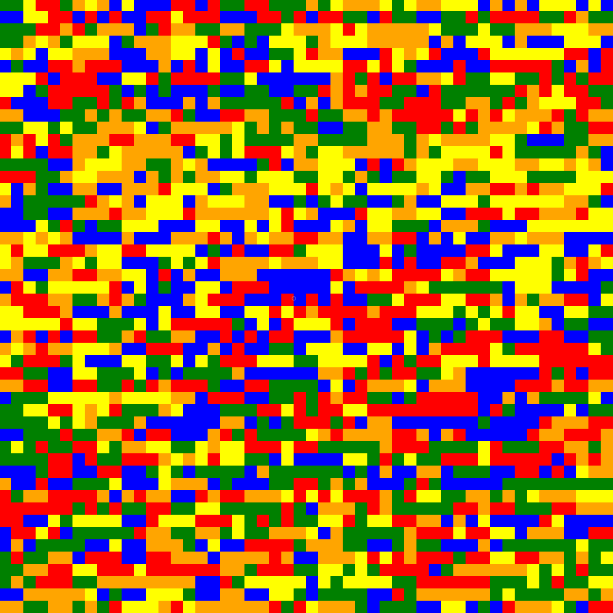
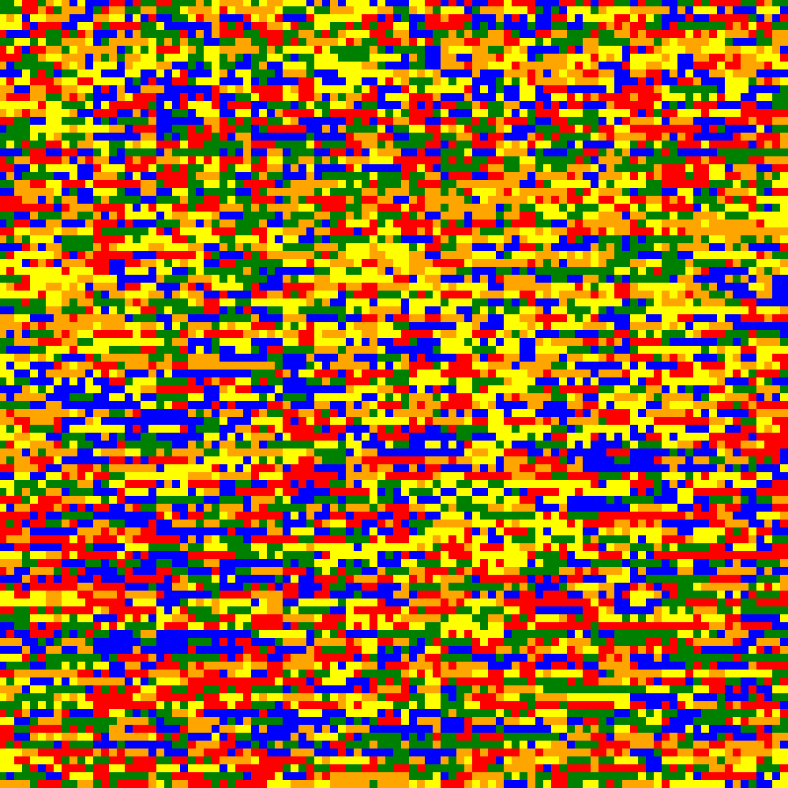
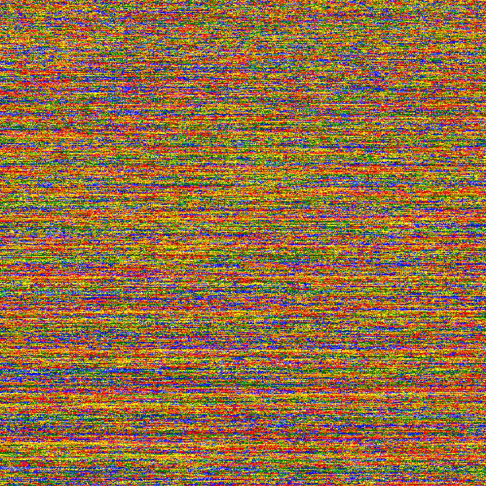

Collatz Conjecture Art
Using python and the Collatz Conjecture Algorithm, I created some art. The code goes through digts starting at 1, calculates
the number of "fluctuations" from the Collatz Conjecture and then assigns a corresponding color. For the original version (left), I only used 5 colors and the modulus operator,
which meant that it would cycle through the colors. With this system however, a number with 5 fluctuations and 40 fluctuations (for example) would be represented the same graphically,
which means its losing some accuracy. In the newer version (right), it starts with the hex code for red (#FF0000), and the color slowly increases, leaving us with plenty of options.
Because of the thousand or so options now, modulus isn't used or needed here, so full accuracy is maintained. It also creates a "heat map" esque design. The purpose of this project
was/is to graphically analyze the pattern of the Collatz Conjecture, which is famously unpredictable, and this goes to show that. At least in this scope, the Collatz Conjecture remains
extremely unpredictable and inconsistent.
10x10


20x20


50x50


100x100


200x200


1000x1000
